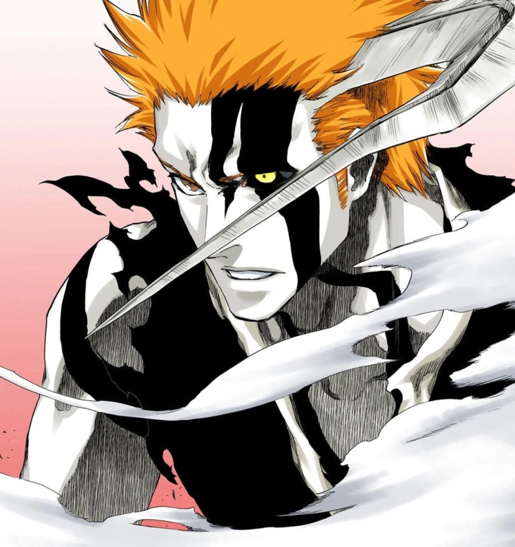
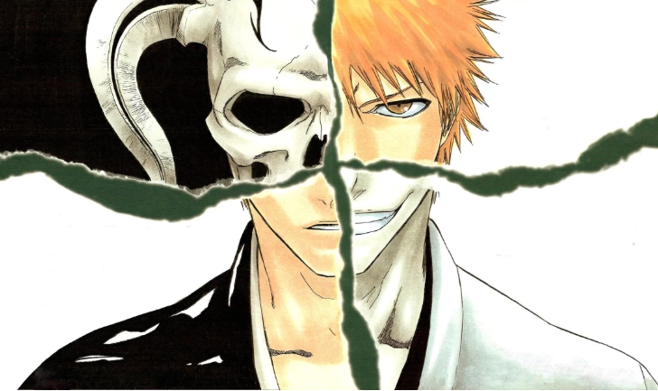
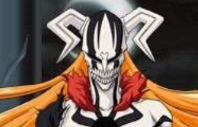
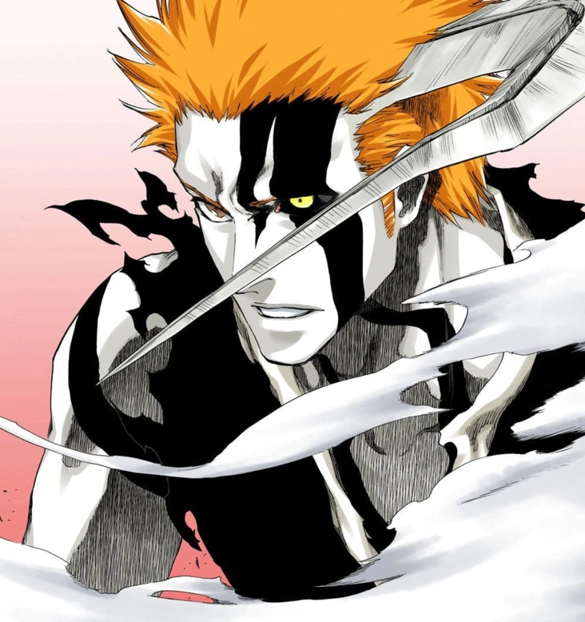
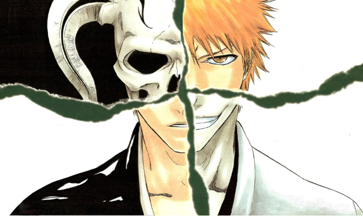
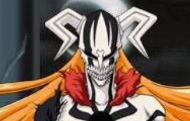
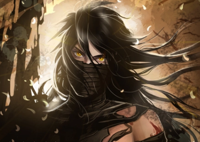
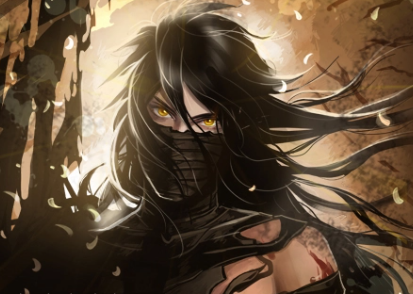

 

|
|
|---|---|
| Sexe | Masculin |
| Naissance | Ville de Karakura |
| Espèce | Humain/Shinigami/Vizard |
| Cheveux | Roux |
| Yeux | Brun |
| Activité | Etudiant |
| Zanpakuto | Zangetsu |
Ichigo Kurosaki (黒崎 一護, Kurosaki Ichigo) est un Humain qui a la faculté exceptionnelle de distinguer les fantômes. Sa vie bascule lorsqu'il rencontre Rukia Kuchiki, qui lui transfère ses pouvoirs de Shinigami afin de sauver sa famille de l'attaque d'un Hollow. Ichigo est le protagoniste principal du manga Bleach
Ichigo est né un 15 juillet, 15 ans avant le début du récit et sa transformation en Shinigami. Il est le fils d'Isshin et de Masaki Kurosaki. Ses sœurs Karin et Yuzu sont nées 6 ans plus tard.
Après avoir effrayé certains skateurs qui ont perturbé le repos d'une fille morte, Ichigo, s'excusant auprès d'elle, promet de lui apporter de nouvelles fleurs pour remplacer celles endommagées par les patineurs, lui disant d'aller au paradis rapidement.
Ce soir-là, Ichigo, voyant Rukia Kuchiki dans sa chambre, la prend initialement pour un cambrioleur, mais quand Ichigo se rend compte que seul lui peut voir l'intrus, il accepte de croire que Rukia est un fantôme. Quand il refuse de croire qu’elle est une Shinigami, Rukia l’attache avec du Kidō.
Lorsqu'un Hollow attaque la maison, Ichigo, après avoir entendu les appels à l'aide de sa sœur, se libère et se précipite pour arrêter le Hollow.
Surpris par son apparence monstrueuse, Ichigo le charge avec une batte de baseball pour tenter de libérer Yuzu.
Rukia libère Yuzu, mais les actions imprudentes d'Ichigo forcent Rukia à le protéger de son corps, la blessant gravement.
Voyant la détermination d'Ichigo à protéger sa famille, Rukia propose de le transformer temporairement en Shinigami en transperçant sa poitrine avec son Zanpakutō et en lui transférant la moitié de son pouvoir.
Absorbant presque tout le pouvoir de Rukia, Ichigo bat rapidement le Hollow avant de s’effondrer ensuite.